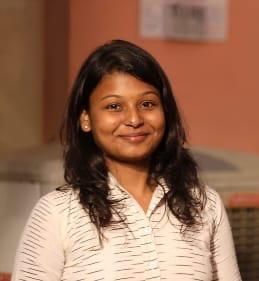

Communication
- Spoken English Training
- Business Communication
- Corporate Communication
- Verbal & Non-verbal Communication
- Vocabulary & Pronunciation Enhancement
- Active Listening Skills
SOFT SKILLS & COMMUNICATION TRAINER

I’m a Soft Skills and Communication Trainer, helping students, graduates, and working professionals become confident communicators. I help learners strengthen their English communication, build interpersonal skills, and prepare for the workplace through engaging, interactive sessions. I believe effective communication opens doors to personal and professional growth. My approach combines practical learning, real-life scenarios, and continuous practice, with individual feedback to help every learner find their voice and take their next step with confidence.
Bharathidasan University
Jul 2023 – Jul 2025Kongu Arts and Science College, Erode
2020 – Jun 2023PROFESSIONAL EXPERTISE
From the first conversation to the next career milestone.
PROFESSIONAL EXPERIENCE
Training people. Building confidence.
Creating opportunities for growth.


TRAINING METHODOLOGY
My sessions are learner-centred, practical, and interactive. Every programme turns concepts into practice, with space to try, reflect, and improve.
TRAINING HIGHLIGHTS
MY MISSION
To empower individuals with the confidence, communication skills, and professional competencies needed to succeed in academics, careers, and everyday life.
MY VISION
To create confident communicators and future-ready professionals through impactful, engaging, and transformational learning experiences.